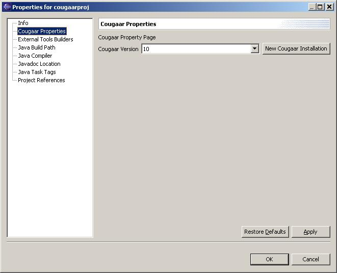

CougaarIDE Use:
Managing a Cougaar Project
Right click on an existing Cougaar project and select
properties from the popup menu. Then select "Cougaar Properties" from
the list of properties.

Here you will be able to manage all of the Cougaar-specific properties
of your project. Currently this is only the Cougaar version it should
use.
Select the version you want to use from the drop down list, or press
the "New Cougaar Installation" button, if you haven't configured the
version you want to use yet (if you create a new one, you can follow
the directions on managing
Cougaar installations for this step).
Once you have selected a Cougaar install, click Apply or Ok
(either one will save your settings).
Selecting Apply or Ok will cause the Cougaar IDE to add the jars
from
COUGAAR_INSTALL_PATH/sys and COUGAAR_INSTALL_PATH/lib you your required
Cougaar
Libraries classpath container, and perform
a complete rebuild of the project, using the new classpath.